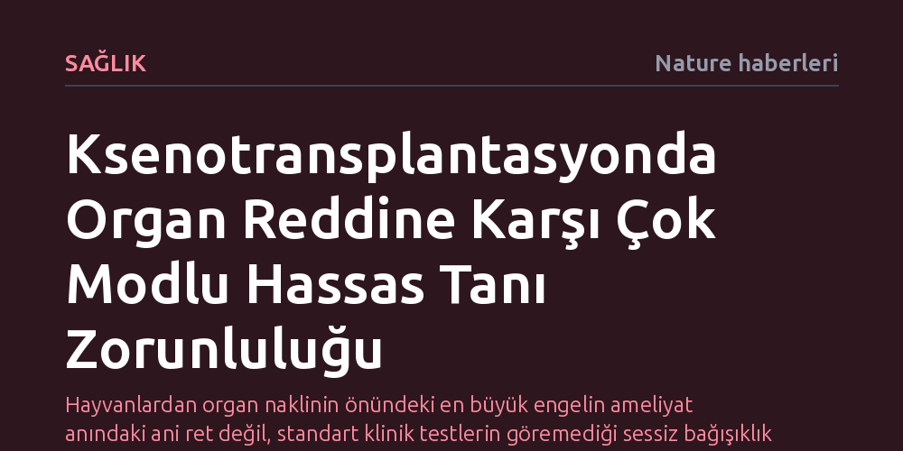

SAGLIK · Nature haberleri · 2026-10-22
Domuzdan insana organ nakillerinde hiperakut ret engellense de bağışıklık kaynaklı doku hasarlarını mevcut klinik testlerle erkenden tespit etmek mümkün olmuyor. Organ kaybını önlemek ve nakilleri kalıcı kılmak için hücresel düzeyde erken uyarı sağlayan çok modlu hassas tanı modelleri şart.
Hayvanlardan organ naklinin önündeki en büyük engelin ameliyat anındaki ani ret değil, standart klinik testlerin göremediği sessiz bağışıklık hasarları olduğunu gösteriyor.

Domuzdan insana organ nakli (ksenotransplantasyon) alanında son yıllarda tarihi bir dönüm noktası yaşandı. Böbrek, kalp, karaciğer ve akciğer nakillerinde en büyük korku olan ve dakikalar içinde organın ölümüyle sonuçlanan hiperakut doku reddi engellendi. Bu gelişme, hayvan organlarının insan bedeninde çalışabileceğini kanıtlayarak tıp dünyasında uzun süredir aşılamayan en kritik barikatı yıkmış oldu.
Ne var ki ameliyat masasındaki bu büyük zafer, yeni ve daha karmaşık bir mücadeleyi başlattı. Bugüne kadar gerçekleştirilen ksenotransplantasyon vakalarının neredeyse tamamında, alıcının bağışıklık sisteminin nakledilen organa zarar verdiği gözlendi. Antikorlar, T hücreleri ve doğuştan gelen bağışıklık mekanizmaları birleşerek dokuda kademeli bir hasar sürecini tetikliyor.
Nakil sonrasında gelişen bağışıklık kaynaklı hasarların erken teşhisi, günümüz klinik uygulamalarının en zayıf halkasını oluşturuyor. Mevcut standart izleme protokolleri ve geleneksel histopatoloji (biyopsi) incelemeleri, mikroskobik düzeydeki ilk hasarları erkenden yakalayacak duyarlılıktan yoksun kalıyor. Henüz dışarıdan klinik bir belirti vermeyen 'subklinik' hasarlar rutin kontrollerde gözden kaçıyor.
Bu teşhis açığı, hekimlerin zamanında tıbbi müdahalede bulunmasını engelleyen kritik bir darboğaza yol açıyor. Hasar ancak organ belirgin biçimde tahrip olup işlevini kaybetmeye başladığında fark edilebiliyor. Geç kalınan her müdahale ise organın nihai olarak reddedilmesiyle ve kaybıyla sonuçlanıyor.
Bu tıkanıklığı aşmanın yolu, hastayı yalnızca standart biyopsilerle değil, farklı biyolojik veri katmanlarını birleştiren 'çok modlu hassas tanı' modelleriyle takip etmekten geçiyor. Genetik profilleme, ileri immünolojik taramalar ve moleküler biyobelirteçlerin entegre edilmesi, bağışıklık sisteminin organa yönelik en ufak saldırısını anında yakalayabilen kapsamlı bir erken uyarı ağı kuruyor.
Böylesi bütüncül bir yaklaşım, yalnızca hastaya uygulanacak bağışıklık baskılayıcı ilaçların hassas biçimde ayarlanmasını sağlamakla kalmayacak; aynı zamanda gelecekte üretilecek donör domuzların genetik tasarımına da ışık tutacak. Hangi genlerin bağışıklık tepkisini tetiklediği netleştikçe, doku reddine karşı baştan dirençli organların geliştirilmesi mümkün hale gelecek.
Ksenotransplantasyonun deneysel ve acil bir müdahale olmaktan çıkıp güvenli, ölçeklenebilir ve rutin bir klinik tedaviye dönüşmesi bu gelişmiş tanı stratejilerinin standartlaşmasına bağlı. Doku hasarının altında yatan biyolojik mekanizmaları erken evrede aydınlatamayan hiçbir tedavi protokolü, nakledilen organın ömrünü uzatmayı başaramaz.
Sonuç olarak, domuz organlarının insan hayatı kurtarması sadece cerrahi başarıya değil, organ ile insan bağışıklığı arasındaki hücresel diyaloğu anbean okuyabilme kabiliyetimize dayanıyor. Hassas tanı yöntemleri klinik uygulamalara girdikçe, organ yetmezliği çeken hastalar için kalıcı ve güvenli çözümler üretmek mümkün olacak.